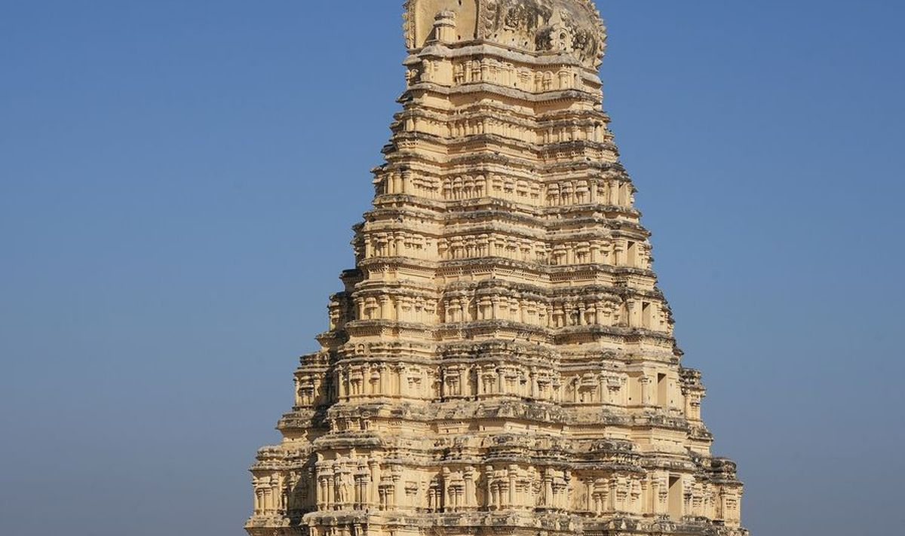

The current position
Sri Virupaksha is a living temple, worshipped without a break since before the Vijayanagara Empire, standing inside a UNESCO World Heritage area administered by the Archaeological Survey of India and the Hampi World Heritage Area Management Authority. In April 2026 the local press reported that the temple's endowment (Muzrai) administration requires archaeology-department permission for weddings, while the ASI Hampi Circle superintendent said approving weddings "is not its responsibility" and that the ASI has never restricted them. The endowment executive officer said hundreds of weddings used to happen every year and have "now become rare", and the Vijayanagara Deputy Commissioner promised a review (Hospet Online, 21 April 2026). We tell families this plainly: the permission exists, it is discretionary, and it takes patience.
Who permits a wedding
The application goes to the temple's endowment office in writing, with the couple's and parents' documents and the muhurta. The office in turn needs the archaeology department's clearance for anything beyond a bare ritual. There is no published form, fee or online booking; the commercial "permission coordination" fees quoted by some planners are their own charges, not the temple's. We do this ourselves, in person, and we do not confirm hotels or vendors until the written yes is in hand.
What is allowed inside
- The ritual itself, performed by the temple's priests on the premises.
- No feast and no cooking on the premises.
- No photography inside without ASI permission. Hampi treats any shoot as commercial filming: applications at least 15 days ahead, a fee for videography, drones banned by ASI signage, and pre-wedding shoots needing sign-off from HWHAMA, the Deputy Commissioner, the Superintendent of Police and the ASI (Hospet Online; Daijiworld).
- No large gathering: the couple, parents and a small group.
- No décor fixed to stone, no pandals, no sound beyond the temple's own.
The non-living monuments of Hampi (the bazaar mantapas, Vitthala, Hazara Rama) are off the table entirely: ASI guidelines restrict events at protected monuments to government bodies and classical cultural programmes and prohibit religious activity (PTI).
How we plan it
A Hampi wedding is a three-part event. Day one: guests arrive at Hosapete or the Jindal Vijayanagar airport, settle into the resorts along the river or in Kamalapura, and take the sunset at Hemakuta and the coracles. Day two: Naandi, Kashi Yatre and Varapooja at the hotel's mantapa with your purohits, the homa in the evening. Day three: a pre-dawn convoy to Virupaksha for the main rite at the muhurta with the immediate family, then the feast and the reception for everyone at the hotel. Photography happens at the hotel and, with permission, in the landscape outside the temple precincts. Nothing is compromised in the ritual sequence; only the location of each part is chosen to respect what the temple allows.
Season, travel, stay
October to March is the season. April and May are brutal for elders, and we say so. The nearest airport is Jindal Vijayanagar (VDY), about 40 km; Hubballi is about 160 km and Bengaluru about 340 km, with overnight trains to Hosapete. Good rooms are limited and the auspicious dates are the same for everyone, so we block early. For the celebration we use the riverside resorts and heritage hotels around Kamalapura and Hosapete; the temple is reached by road and a short walk through the bazaar.
Questions
Can we have the feast at Virupaksha temple?
No. Cooking and feasts are not permitted on the premises. The feast is held at your hotel or a hall in Hosapete or Kamalapura, on banana leaf, with the same traditional cooks.
Can we take photographs inside the temple?
Not without ASI permission, which must be applied for at least 15 days ahead and is charged. We plan photography at the hotel and at permitted viewpoints outside the precinct, and apply for temple photography only if the family wants it and the authorities are receptive for those dates.
How many guests can come to the temple ceremony?
A small group: the couple, both sets of parents and close family. Everyone else joins at the reception. The exact number is set by the temple office for your dates.
Is there an alternative near Hampi if permission is refused?
Yes. We hold the hotel dates until the written answer, and if the temple declines we propose nearby living temples under the endowment department, with the Hampi visit kept as a blessing and photographs, so the dates and the travel are not lost.